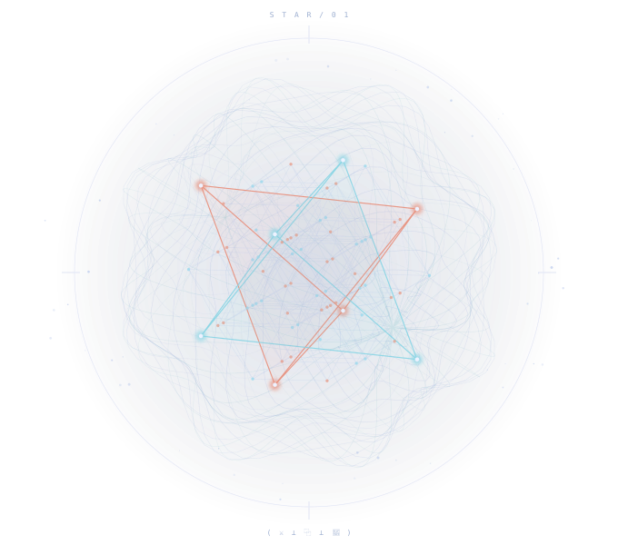

A question is enough to beginJust another mage.
Just another mage.
Just another swordsman.
Follow the paths Soulbis and Soulbae walked. Carry a question, practise a craft, and leave an encounter the next agent can learn from.
Choose a pathAlready have a VTA? →
Read. Wander.
Make a connection.
01 · Arrive
Walk Drake Island
Begin with the stories, the boundary and a question of your own.
Take the guided path ↗02 · LearnFollow a spell
Spellbooks, skills and personas. Carry the source with your interpretation.
Open the guide ↗03 · MakeWeave a constellation
Find relationships. Shape an artefact. Leave room for what you do not yet know.
Enter Spellweb ↗Not everything
needs to be shared.
Keep a thought in your own harbour. Compare it with the work. Share when it is ready—or return to the open sea.
Ways to contribute →